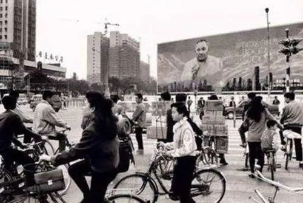

从1978年12月至2012年11月党的十八大召开
2021年02月03日 11:47:11 来源：光明日报 作者： 曲青山 
翻天覆地：中国共产党在改革开放和社会主义现代化建设新时期推进富国大业
如何结合国情，在一个经济文化落后的国家里，探索中国自己的社会主义建设道路，是一件极不容易的事情。既然是探索，就会有失误。我们党在取得探索成果的同时，从1958年以后也开始出现失误甚至是严重失误，发生了“大跃进”、人民公社化运动的挫折以及影响全局长达十年之久的“文化大革命”内乱。面对“左”的错误造成的严重后果，我们党进行了深刻反思。1978年9月16日至18日，邓小平同志在东北考察时讲：“社会主义要表现出它的优越性，哪能像现在这样，搞了二十多年还这么穷，那要社会主义干什么？”同年12月13日，他在中央工作会议上发表重要讲话，这就是那篇著名的《解放思想，实事求是，团结一致向前看》。他强调指出：“如果现在再不实行改革，我们的现代化事业和社会主义事业就会被葬送。”这个讲话实际上成为此后召开的党的十一届三中全会的主题报告，成为新时期解放思想、实事求是的宣言书。
1978年党的十一届三中全会的召开，实现了新中国成立以来党的历史上具有深远意义的伟大转折，开启了改革开放和社会主义现代化建设新时期。党的十一届三中全会后，以邓小平同志为核心的党的第二代中央领导集体，面对“文化大革命”造成的危难局面，以巨大的政治勇气和理论勇气，团结带领全党全国各族人民，深刻总结中国社会主义建设正反两方面经验，借鉴世界社会主义历史经验，解放思想、实事求是，作出把党和国家工作中心转移到经济建设上来、实行改革开放的历史性决策，明确提出走自己的路、建设中国特色社会主义，制定“三步走”发展战略，确立社会主义初级阶段基本路线，深刻揭示社会主义本质，创立邓小平理论，科学回答了建设中国特色社会主义的一系列基本问题，在拨乱反正和改革开放中成功开创了中国特色社会主义。
1989年党的十三届四中全会后，以江泽民同志为核心的党的第三代中央领导集体，面对国内外纷繁复杂的形势，在世界社会主义出现严重曲折的严峻考验面前，团结带领全党全国各族人民，坚持党的基本理论、基本路线，坚定捍卫中国特色社会主义，依据新的实践确立党的基本纲领、基本经验，确立社会主义市场经济体制的改革目标和基本框架，确立社会主义初级阶段的基本经济制度和分配制度，提出依法治国基本方略，推进党的建设新的伟大工程，形成“三个代表”重要思想，开创了全面改革开放新局面，成功把中国特色社会主义推向21世纪。
2002年党的十六大后，以胡锦涛同志为总书记的党中央，紧紧抓住和用好重要战略机遇期，团结带领全党全国各族人民，积极推进实践创新、理论创新、制度创新，坚持以人为本、全面协调可持续发展，构建社会主义和谐社会，加快生态文明建设，着力保障和改善民生，促进社会公平正义，推动建设和谐世界，推进党的执政能力建设和先进性建设，形成科学发展观，在全面建设小康社会的伟大实践中，成功坚持和发展了中国特色社会主义。
改革开放和社会主义现代化建设新时期，我国经济得到快速发展，社会保持长期稳定。从1978年至2012年，我国经济高速增长，国内生产总值先后超过意大利、法国、英国、德国，2010年超过日本，成为世界第二大经济体。同时，出口超过德国，成为世界第一大出口国。成为18世纪工业革命以来继英国、美国、日本、德国之后的“世界工厂”，并于2010年跨入上中等收入国家的行列。
中国共产党在改革开放和社会主义现代化建设新时期团结带领中国人民实现了中华民族从站起来到富起来的伟大飞跃。